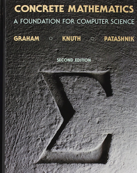

📖《具体数学》是计算机科学数学基础经典著作，由算法大师Donald Knuth与Ronald Graham合著。书中讲解递归、数论、离散概率等核心内容，是《计算机程序设计艺术》的数学基础。
这本书的名字"Concrete Mathematics"是"Continuous"（连续）和"Discrete"（离散）的合体，也暗示了它介于纯数学和应用数学之间的定位——书中的数学知识都是计算机科学真正需要的"硬通货"。
最让我印象深刻的是书中的习题。每一道题都经过精心设计，有些甚至来自真实的编程问题。解答习题的过程，实际上是在训练"算法思维"。书中还有很多边栏注释，是作者与学生们的课堂对话，幽默风趣，让枯燥的数学变得生动。这不是一本容易读的书，但对于想深入理解算法背后数学原理的人来说，它是必读经典。